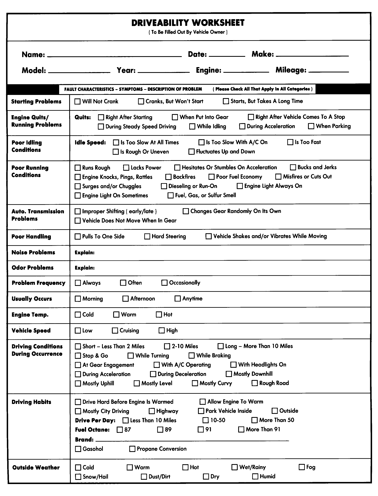

LEMON Manuals
: Even more car manuals for everyone: 1960-2025
Home
>>
Hyundai
>>
2022
>>
Elantra N Line, Standard Trans
>>
Repair and Diagnosis (Single Page)
>>
General Information
>>
Check Lists
>>
Symptom Check List Worksheet - General Information
>>
Symptom Check List Worksheets
>>
Condensed Version - All On One Page
Condensed Version - All On One Page
NOTE:
Have the service adviser fill out this form with the customer whenever possible.
Fig 1: Entire Vehicle - Symptom Check List For Customer
